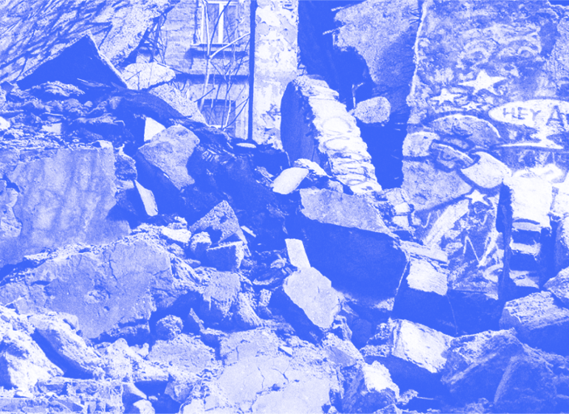

Детка, ты в огне
30.03.2023 11:10
Бытовые
Мастноу


Поговорим про пожары. Пожар — это опасное и разрушительное явление, которое может возникнуть в любом месте и в любое время.
Что делать при пожаре?
- Немедленно вызовите пожарную службу, назовите точный адрес и опишите ситуацию. Например сказать, что дед топил баню и загорелся весь участок на улице Пожарной, дом 17, дед цел.
- Если пожар вам по пояс, можно попробовать тушить с помощью огнетушителя, песка или воды, но только если вы уверены в своих силах и не находитесь в опасности. Тушить горящую баню не стоит.
- При открытом огне не используйте лифты, так как они могут заблокироваться и стать ловушкой. Если в помещении есть дым, низко приблизьтесь к полу, так как дым поднимается вверх и на полу будет больше кислорода.
- Если возможно, закройте дверь перед уходом, чтобы замедлить распространение огня.
- Если вы не можете выйти из помещения, закройте дверь, заткните щели под дверью влажными тканями и сообщите о своем местонахождении.
- Если вы находитесь на высоте и не можете спуститься по лестнице, оставайтесь на месте и ждите пожарных. Вы можете подать сигнал о помощи, используя красный фонарь или крики.
- Если вы находитесь в машине, немедленно выезжайте из зоны пожара и отъезжайте на безопасное расстояние.

Удивительно, как пожар раскрывает наши приоритеты

Запомни
Однажды случился пожар, спасатели начали эвакуировать людей из горящего здания. Один мужчина не хотел покидать свою квартиру, говоря, что у него там слишком много ценных вещей. Но спасатели настояли и взяли его на руки. Пока они несли его вниз по лестнице, мужчина спрашивал: «Вы хотя бы выключили плиту?». На что спасатель ответил: «Не волнуйтесь, она уже выключена. Она сгорела вместе с кухней».
Курил. Уснул. Пожар. Что дальше?
Мастноу
Бытовое
Курил. Уснул. Пожар. Что дальше?
Мастноу
Бытовое
Вам также пригодится:

Земля уходит из-под ног

10 самых badass змей

А у нас в квартире газ!

Слишком много воды